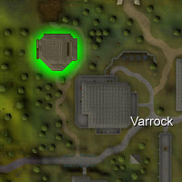
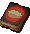
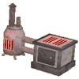
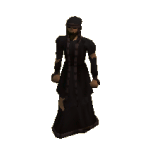
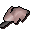
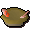

")
Cooking - Extra Features
The Cooks' Guild | Summoning Familiars | Preparing Sinew | Evil stew of DOOM!
Iron Spit | Cooking Gauntlets | Chef's Delight | Pies that don't just heal...
Dungeoneering | Quests
Iron Spit | Cooking Gauntlets | Chef's Delight | Pies that don't just heal...
Dungeoneering | Quests
The Cooks' Guild

The Cooks' Guild is a good place to make apple pies because of the respawning items you will need, such as cooking apples and pie dishes, and the fact that the guild is a large windmill to make the flour for pastry.
A necklace of skills will teleport you directly to the guild.
Ground Floor
On the ground floor of the Cooks' Guild you will find the flour bin of the windmill (this is only full of flour when you have placed grain into the hopper and operated the controls on the second floor), a sink, a chocolate bar on the table and the pie stall. If you have completed the hard tasks in the Varrock Achievement Diary, you will also have access to a small bank on the ground floor.The Pie Stall (Members only)

 If you offer to help Romily with his stock of pies, he will ask you to make some pies. If you don't know how to make the pies he wants, go to Romily's 'Trade' option (by right-clicking on Romily) and buy the Pie Recipe Book for 5gp. This book contains recipes for the pies of RuneScape.
Gather the ingredients, make the pies and bring them back to Romily. He will then pay you for your efforts. The more pies you make, the more money you will make!
First Floor
On the first floor you will find two ranges, cooking apples, a cake tin, a bowl and a pie dish. The Cooking ranges are useful because they can be used to cook all food.Second Floor
On the second floor you will find the top of the windmill where the controls are located. Place grain in the hopper on this floor and collect it from the flour bin on the ground floor. Also on this floor there is another cooking apple, an empty jug, an empty pot and some grapes.
Summoning Familiars
Using the Summoning skill, you'll find that there are a few familiars that might be useful for training your Cooking. Of particular note is the fruit bat, whose flying ability will fill its inventory with fruit while you're in Karamja. This is a great way to get all the fruit you need for all those gnome cocktails.
Preparing Sinew (for Crossbow Strings)
Crossbows require a tougher string than flax can be spun into, so it is most common to use sinew. Sinew can be harvested by Cooking beef or bear meat over a range. When you choose to cook beef or bear meat on a range, you will be presented with the choice of either Cooking it into a delicious meal, or drying it out into sinew. You only need level 1 Cooking to prepare sinew.
 |
+ |  | = |
Once sinew has been prepared, it can be spun into a crossbow string by using it with a spinning wheel. Click here for more details.
Evil stew of DOOM!

Those who have started the Recipe for Disaster quest, and have got to the stage where they need to save Evil Dave will learn of the totally evil and totally spicy stew.
To get stew, you will need to get an empty bowl, fill it with water and add a potato. When you have done this, continue by adding some cooked meat, and then cook the stew on a range to complete it.
Now you have normal stew, it is time to spice things up a bit! If you head to Evil Dave's BASEMENT OF DOOM!, you will find Evil Dave himself, along with many hell-rats.
Using your cat (or soon to become hellcat), order it to chase the hellrats. When it successfully captures one, they will drop a spice shaker, one of 4 colours, which may have up to 4 doses of that colour in them.
| Spice | Skills affected |
![[image]](../../img/main/kbase/items/misc/red_spice.gif) Red spice |
Attack, Strength, Defence, Ranged and Magic |
![[image]](../../img/main/kbase/items/misc/orange_spice.gif) Orange spice |
Smithing, Crafting, Fletching, Runecrafting, Firemaking, Cooking and Construction |
![[image]](../../img/main/kbase/items/misc/yellow_spice.gif) Yellow spice |
Prayer, Agility, Hunter, Slayer and Thieving |
![[image]](../../img/main/kbase/items/misc/brown_spice.gif) Brown spice |
Woodcutting, Herblore, Farming, Fishing and Mining |
How it works
You can use a maximum of 3 doses of a colour in a stew, and the colours/doses will determine what the stew will do.
To work out how the stew may effect you, you need to get the number of doses you put in, and multiply it by 2. This is the maximum you will gain or lose, please note that it is up to this number. For example, if the number is 6 you may get 4.
Of course, this means if you are lucky, you could temporarily boost any of the skills mentioned above by 6! (Or, if you are unlucky, temporarily lower the skill by 6.)
If you want an extremely random stew, try putting 3 doses of each colour in and see what happens!
Iron Spit
This piece of equipment can be used to cook some meats on an open fire. You can cook rabbit, bird, beast and chompy meats on the spit.
Once you have some raw meat, use the spit with the raw meat. Then light a fire and use the skewered meat on the fire. Jubbly meat can be cooked on the spits outside Rantz's cave and Jiggig.
![[image]](../../img/main/kbase/items/misc/spit_roast.gif) Iron Spit |
+ | ![[image]](../../img/main/kbase/items/food/meat/raw_rabbit1.gif) Raw Rabbit |
= | Skewered Meat |
Cooking Gauntlets
 Cooking gauntlets can be obtained as a reward from the Family Crest Quest. These Cooking gauntlets give you an increased chance of successfully cooking certain types of fish.
Cooking gauntlets can be obtained as a reward from the Family Crest Quest. These Cooking gauntlets give you an increased chance of successfully cooking certain types of fish.
Chef's Delight
 You can make the different types of ales by fermenting various ingredients. One of these drinks is the level 54 Chef's Delight, which will raise your Cooking level by 1-5 (based on your normal Cooking level). For more information please see the Cooking Methods section.
You can make the different types of ales by fermenting various ingredients. One of these drinks is the level 54 Chef's Delight, which will raise your Cooking level by 1-5 (based on your normal Cooking level). For more information please see the Cooking Methods section.
Pies that don't just heal...
There are some new pies that cooks are discovering they can make. These pies do not just heal, but also help with your skills.
To make these pies, you will have to follow the basic steps of making a pie:
- Make pastry dough by using water with a pot of flour.
- Use the pastry dough with an empty pie dish and add a filling of your choice.
- Use the pie with a cooking range.
The following table shows information on the pies:
| Pie | Cooking Level Required |
Ingredients | Amount Healed | Other Effects |
![[image]](../../img/main/kbase/items/food/baked/mud_pie.gif) Mud pie |
29 |
Compost Water Clay |
0 | Halves target's run energy |
![[image]](../../img/main/kbase/items/food/baked/veg_pie.gif) Garden pie |
34 |
Tomato Onion Cabbage |
120 | +3 to Farming |
![[image]](../../img/main/kbase/items/food/baked/fish_pie.gif) Fish pie |
47 |
Trout Cod Potato |
120 | +3 to Fishing |
|  Admiral pie |
70 |
Salmon Tuna Potato |
160 | +5 to Fishing |
![[image]](../../img/main/kbase/items/food/baked/wild_pie.gif) Wild pie |
85 |
Raw bear meat Raw chompy meat Raw rabbit meat |
220 | +5 to Slayer +4 to Ranged |
![[image]](../../img/main/kbase/items/food/baked/summer_pie.gif) Summer pie |
95 |
Strawberry Watermelon Apple |
220 | Heals 10% run energy +5 to Agility |
Cooking Training in Dungeoneering
It is possible to train all of your skills while dungeoneering, and Cooking is no exception. You can cook fish and mushrooms, adding them to potatoes to make more invigorating foods. You can also gain Cooking experience by completing cooking skill doors.
- To find out more about skill doors and the basics of dungeoneering, please click here
- To find out about cooking in Daemonheim, click here
- To find tables with statistics on each dish in Daemonheim, click here
Quests Giving Cooking Experience
For information on which quests reward you with Cooking experience, see the Cooking Rewards page.
Click here to view the Cooking FAQs

More articles in
Cooking
|
|
|
Further Help
If this article does not help you, you may find the following sections of the RuneScape site helpful:
|
|